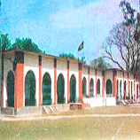

অখন্ড বাংলার উত্তর জনপদে শিক্ষার আলো জ্বালানোর জন্য রংপুর এবং এর নিকটবর্তী এলাকার
শিক্ষানুরাগী জমিদারবর্গের উদার মনোবৃত্তির ফলশ্রুতি আজকের ‘রংপুর জিলা স্কুল’।
১৮৩২ খ্রিস্টাব্দে বাংলার তৎকালীন লর্ড উইলিয়াম বেন্টিং ‘জমিদার স্কুল’ নামে এই বিদ্যালয়ের
ভিত্তি প্রস্থর স্থাপন করেন।ইতোপূর্বে ১৮২৮ খ্রিস্টাব্দে জনশ্রুত অনুযায়ী ১৮২৫ খ্রিস্টাব্দে এর শিখন কার্যক্রম
শুরু হয় ।।অনেক সমস্যার মধ্য দিয়ে বিদ্যালয়টি উন্নতির পথে অগ্রসর হয়। ১৮৬২ খ্রিস্টাব্দে তৎকালীন
বৃটিশ ভারতের প্রাদেশিক সরকারের শিক্ষা বিভাগের আওতায় বিদ্যালয়টি ‘রংপুর জিলা স্কুল’ নামে
আত্মপ্রকাশ করে।
কিছুদিনের জন্য প্রধান শিক্ষক স্বর্গীয় চন্দ্রনাথ ভট্টাচায্যের নেতৃত্বে বিদ্যালয়টি 2nd Grade College হিসেবে পরিচালিত হয়।
পরবর্তী পর্যায়ে ১৮৮৩ খ্রিস্টাব্দে লেফটেন্যান্ট গভর্নর স্যার এশলি ইডেন ১৫.৬৬ একর জমির উপর
সম্পূর্ণ নিজস্ব আঙ্গিকে বর্তমান প্রধান বিল্ডিং এর ভিত্তিপ্রস্থর স্থাপন করেন।বিদ্যালয়টি জন্মলগ্ন থেকেই
অনেক বিজ্ঞানী, সাহিত্যিক, নেতা, খেলোয়াড় এবং দেশ বরেণ্য জ্ঞানী-গুণী ব্যক্তির লালনভূমি হিসেবে স্বাক্ষর
বহন করছে।
রংপুর জিলা স্কুল ১৯৯১ খ্রিস্টাব্দ থেকে প্রভাতী ও দিবা এই দুই শিফ্টে মোট চারটি শাখায় পরিচালিত হচ্ছে।
প্রতি শিফ্ট সুদক্ষ ও বিজ্ঞ ২৫ জন করে মোট ৫০ জন শিক্ষক, ২ জন সহকারি প্রধান শিক্ষক এবং ১ জন
প্রধান শিক্ষক দ্বারা বিদ্যালয়টি পরিচালিত হচ্ছে।
১৯৯৯ খ্রিস্টাব্দে এবং ২০০০ খ্রিস্টাব্দে এস.এস.সি.পরীক্ষায় রংপুর জিলা স্কুলের ছাত্র রাজশাহী শিক্ষাবোর্ডে
প্রথম স্থান অধিকার করেছে। ২০০৪ সালে প্রাথমিক ও জুনিয়র বৃত্তি পরীক্ষায় এ বিদ্যালয় ‘রংপুর অঞ্চল’ এ
ছেলেদের মধ্যে প্রথম স্থান অধিকার করে। প্রায় প্রতিবছরেই এ বিদ্যালয় হতে শিক্ষার্থীরা এস.এস.সি.পরীক্ষায়
অংশগ্রহণ করে শতভাগ কৃতকার্য হয়।
জি.পি.এ ৫.০০ এর সংখ্যাও উল্লেখযোগ্য।২০০৬ সালে ১১৭ জন, ২০০৭ সালে ১৩৯ জন, ২০০৮ সালে ১৬৩ জন,
২০০৯ সালে ১৯৫ জন,২০১০ সালে ১৫০ জন, ২০১১ সালে ১৫৬ জন, ২০১ জন এবং ২০১৩ সালে ১৭৯ জন পরীক্ষার্থী জিপিএ ৫.০০ লাভ করে।
প্রতি বছরেই সববিষয়ে ৫.০০ এর সংখ্যা উল্লেখযোগ্য।
এস.এস.সি’র মত জে.এস.সি ও প্রাথমিক শিক্ষা সমাপনী পরীক্ষায় এ প্রতিষ্ঠানের ফলাফল বিদ্যালয়ের
ঐতিহ্যকে অক্ষুণ্ণ রেখেছে। অভিভাবক-শিক্ষক সমাবেশ, নিয়মিত ছাত্র সমাবেশসহ সুশৃঙ্খল শিক্ষাদানের
পাশাপাশি খেলাধুলা এবং সাংস্কৃতিক অঙ্গনে রংপুর জিলা স্কুল অনন্য ভূমিকা রেখে আসছে।
এছাড়া জাতীয় স্কুল টেলিভিশন বিতর্ক প্রতিযোগিতায় রংপুর জিলা স্কুল একাধিকবার চ্যাম্পিয়ন হওয়ার
গৌরব অর্জন করেছ।।।